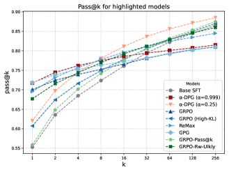
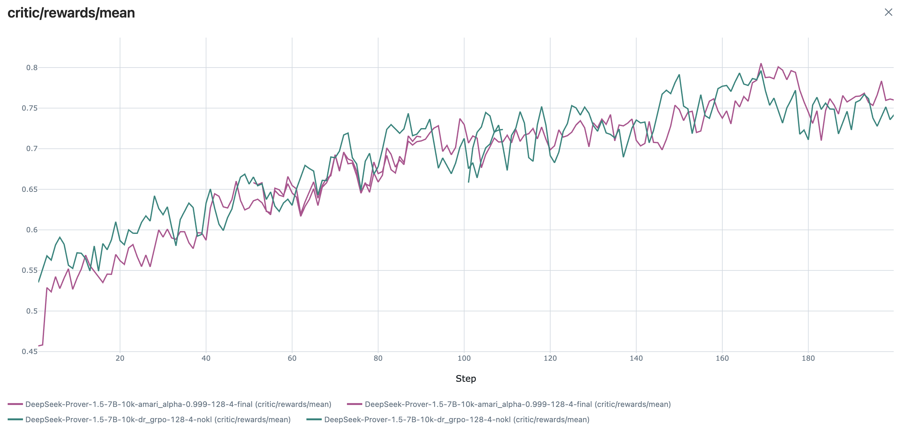

Trains theorem provers on a Lean benchmark using DeepSeek-Prover and the open Lean Workbook dataset to improve proof diversity.
Abstract
Reinforcement Learning (RL) has become the de facto standard for tuning LLMs to solve tasks involving reasoning. However, growing evidence shows that models trained in such way often suffer from a significant loss in diversity. We argue that this arises because RL implicitly optimizes the "mode-seeking" or "zero-forcing" Reverse KL to a target distribution causing the model to concentrate mass on certain high-probability regions of the target while neglecting others. In this work, we instead begin from an explicit target distribution, obtained by filtering out incorrect answers while preserving the relative probabilities of correct ones. Starting from a pre-trained LLM, we approximate this target distribution using the $α$-divergence family, which unifies prior approaches and enables direct control of the precision-diversity trade-off by interpolating between mode-seeking and mass-covering divergences. On a Lean theorem-proving benchmark, our method achieves state-of-the-art performance along the coverage-precision Pareto frontier, outperforming all prior methods on the coverage axis.
Problem
Reinforcement learning from verifiable rewards (RLVR) for training LLMs on reasoning tasks implicitly optimizes mode-seeking reverse KL, causing models to collapse onto high-probability modes and lose diversity in generated solutions.
Approach
The authors propose Distributional Matching with Verifiable Rewards (DMVR), which defines the target distribution as the base model filtered by a binary verifier constraint. They implement alpha-DPG to approximate forward-KL minimization, preserving diversity while filtering incorrect answers. Experiments use Lean formal theorem proving as the verification domain, since it provides exact binary correctness feedback.
Results
DMVR-trained models maintain higher sequence entropy than GRPO-trained models while achieving comparable or better pass@k performance. The approach avoids the polarizing effect where GRPO improves easy problems but makes hard problems harder. On formal mathematics benchmarks with Lean verification, the diversity-preserving objective yields better test-time scaling.

Figure 2 : Pass@ k curves on the test set for the Base-SFT model tuned with different methods.

Figure 6 : Training curves of both \alpha -DPG and dr-GRPO. Sequence entropy on the right and reward on the left